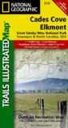
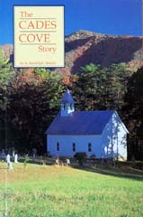

|
| ||||
|

Cades Cove DescriptionCades Cove is one of the most popular destinations within the most visited national park in the country. It is one of the best places in the Smokies to view wildlife and to see the spectacular fall colors in October. The cove also includes historic buildings of early settlers in the area, a working grist mill, several hiking trails, a campground, and a picnic area. Admission is free.Cades Cove features an 11-mile, paved loop road around the cove. A self-guiding auto tour booklet is available for $1 at loop road entrance. The booklet provides an excellent description of the historic buildings and other sites in the cove. It also gives a good history of Cades Cove. Bicycling and Horseback riding are popular in Cades Cove. You may rent bicycles or horses, except in winter, or bring your own. |

- Loop road entrance: The Auto tour book is available at the orientation shelter. It is sometimes staffed with rangers who can provide more information about the cove.
- Sparks Lane: is a short-cut out of the one-way loop road back to the entrance.
- John Oliver Place: A historic log home of one of the early settlers of the cove.
- Primitive Baptist Church: Historic church established in 1827. The current building was built in 1887.
- Methodist Church: Historic church established in the 1820s. The current building was built in 1902.
- Hyatt Lane: Another two-way road that can provide a short-cut back to the entrance.
- Missionary Baptist Church: Started in 1839 from a group that split from the Primitive Baptist Church over the issue of missionary work.
- Rich Mountain Road: One-way road leading out of the cove which provides scenic views.
- Cooper Road Trail: Hiking trail that was once part of an Indian trail.
- Elijah Oliver Place: Historic log house.
- Mill Area and Visitor's Center: Walking tour with grist mill and several other historic buildings. Restrooms and visitor center also available.
- Henry Whitehead Place: Historic sawed log house.
- Cades Cove Nature Trail: Short hiking trail.
- Hyatt Lane: Two-way road that can be used to repeat a portion of the loop.
- Dan Lawson Place: Historic house built in 1856.
- Tipton Place: Historic house built in the 1870s.
- Carter Shields Cabin: Historic Cabin.
- Sparks Lane: Two-way road that can be used to repeat most of the loop.
Recommended Reading
|
 Cades Cove/ Elkmont, Great Smoky Mountains National Park. Trails Illustrated Map |
 100 Hikes in The Great Smoky Mountains National Park |
 The Cades Cove story |
Best times to visit Cades Cove
Weather in Cades Cove

Forcast for Townsend, near Cades Cove
General weather information in the Smokies
Best Hiking in Cades Cove
Cades Cove offers numerous hiking trails. Some of the most popular are:
- Abrams Falls: 5 mile round trip hike to one of the best waterfalls in the Smokies. Trailhead is located about 5 1/2 miles into the Cades Cove loop road. Signs on the road point to the parking area.
- Cades Cove Nature Trail: Starts at stop #13 on the loop road. This is a short, easy hike.
- Anthony Creek Trail: Starts at the picnic area. The full trail is 7 miles long and difficult, but you can go as far as you want and then return to the picnic area.
- Ace Gap: 5 1/2 miles, relatively flat. The trailhead is located on Rich Mountain Road.
Camping in Cades Cove
The Cades Cove campground is located near the entrance and is open year around. It has restrooms with running water and flush toilets, but no hot water, showers, or RV hookups. There are 159 campsites, each with a picnic table, a fire grate, and a clear area for a tent. RVs up to 35 feet can be accommodated. There is a small store near the campground. For reservations and price information, call (877) 444-6777 or visit www.recreation.gov. A map of the campground is available here.
There are also several back-country campsites that can be reached by some of the hiking trails. Back-country camping requires a permit, which is available free from the ranger station.
You may also choose to stay in a mountain chalet or cabin in Townsend or Gatlinburg.
Picnicing at Cades Cove
Cades Cove has a wonderful picnic area with picnic tables and grills. A mountain stream runs through the wooded picnic area. Parking and restrooms are available.
Restrooms
Restrooms with running water and flush toilets are available at the picnic area and at the campground.